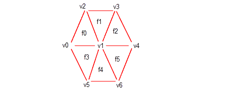
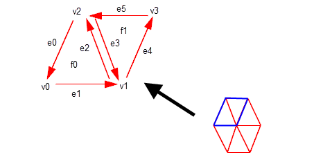
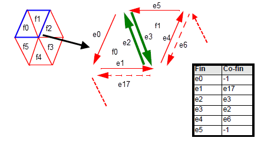
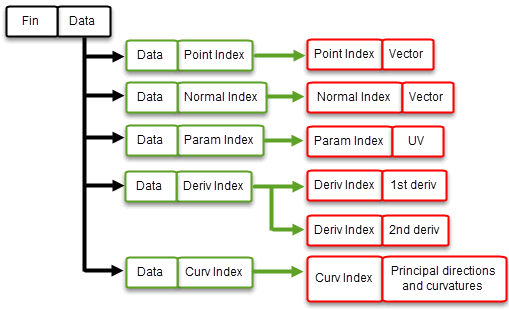
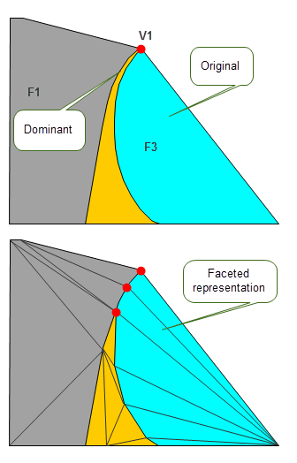

| |
Tabular Output Of Faceting |
| <<< Faceting Output Via GO | Chapters | Parasolid View Matrices >>> |
Parasolid can create facet information in tabular format, defining the facet mesh in terms of connected facet strip, facet, fin and vertex indices. Unlike facet output via the GO interface, tabular output of faceting allows you to output connectivity information for a facet mesh. This chapter describes how you can return facet data to your application in tabular format using PK_TOPOL_facet_2, and how you can control which information is returned.
|
Note: This function offers partial support for topology that has facet geometry (meshes and plines). See the
PK Interface Programming Reference Manual for more information. |
For information on the graphical output of facet geometry, see Chapter 109, “Faceting Output Via GO”.
A facet is an ordered sequence of fins that join vertices together. A facet strip is an ordered sequence of connected facets. A facet mesh is a set of either connected facets or facet strips. The topology of a facet mesh can be described in terms of the connectivity between the facets or facet strips in the facet mesh, their associated fins, and the vertices at the head of each fin. The geometry of a facet mesh is derived from the geometry of the original model: the head of every fin in the facet mesh has a set of associated geometric information (point, normal, parameter, derivative, principal directions and curvatures) that is derived from the corresponding position in the original model.
Figure 110-1 shows a hexagonal facet mesh consisting of six facets, numbered f0 to f5. These facets join seven vertices together, numbered v0 to v6. For simplicity, fin numbering is not shown.
Figure 110-1 Hexagonal face mesh
Vertex v1 is called an interior vertex. The other vertices lie on the mesh boundary and are known as exterior vertices.
Figure 110-2 shows a detail of facets f0 and f1 from Figure 110-1, with fin information added. By convention, the fins around a facet point anti-clockwise when the facet mesh is viewed from the outside of a face. Each fin is associated with exactly one vertex: the one lying at the head of the fin.
Figure 110-2 Facets in schematic form
A facet is therefore bound to the fins that form its boundary, and those fins in turn are bound to the vertices they point to. You can describe this information in tabular form as follows (for facets f0 and f1):
Unlike the example above, all the tables of facet data that PK_TOPOL_facet_2 can return associate just two types of information. There are many of these tables to choose from, so that your application has a rich range of data to choose from. This chapter describes what tables you can return, and what the information in those tables represents.
Tabular data is returned by PK_TOPOL_facet_2 in one of two types of table:
Many examples of both types of table are given throughout this chapter.
Like PK_TOPOL_render_facet_o_t, PK_TOPOL_facet_2_o_t contains two sub-structures:
You use PK_TOPOL_facet_choice_2_o_t to control which types of faceting data are returned. These are divided into the following categories:
The default settings for each of the available options ensures that no tabular data is returned for a facet mesh. In order to return tabular data, you need to set the options you are interested in after you have initialised PK_TOPOL_facet_choice_2_o_t.
Like all Parasolid options structures, you can initialise PK_TOPOL_facet_2_o_t by calling the corresponding PK_TOPOL_facet_2_o_m macro. Unlike other options structures, calling this macro initialises both the PK_TOPOL_facet_mesh_2_o_t and PK_TOPOL_choice_2_o_t options structures, as shown in the example below.
/* declaration and initialisation */ PK_TOPOL_facet_2_o_t my_option_struct; /* Set default mesh and choice options */ PK_TOPOL_facet_2_o_m (my_option_struct); /* Set specific mesh options */ my_option_struct.control.<field1> = <value1>; my_option_struct.control.<field2> = <value2>; /* Set specific choice of tables to output */ my_option_struct.choice.<field1> = <value1>; my_option_struct.choice.<field2> = <value2>; /* ... now call PK_TOPOL_facet_2(...); */ |
Tabular data is returned in the PK_TOPOL_facet_2_r_t structure. It contains totals for:
The data tables themselves are returned in a PK_TOPOL_facet_table_t sub-structure, which contains pointers to arrays of data that define the facet topology, geometry, tracking data, and error data for the facet mesh.
Option names in PK_TOPOL_facet_choice_2_o_t match field names in this return structure. Thus, to return the
facet_fin
table, just set the
facet_fin
option in the options structure.
By default, PK_TOPOL_facet_2 returns a set of tables containing facet data for all the bodies and/or faces being faceted. However, you can instead choose to return a separate set of tables for each body instance from which faces are being faceted. If you do this, and you are faceting a list of faces or a mixture of bodies and faces, faces from the same body (with the same transform) are output in the same set of tables.
Returning multiple sets of tables can be particularly useful if you are taking advantage of the multi-threading capabilities of a processor to improve faceting performance, as described in Section 110.3, “Tabular faceting and threads”. In this situation, returning multiple sets of tables can reduce memory requirements for faceting, because the memory for each body instance from which faces are being faceted can be freed as soon as faceting for that body instance has completed , rather than waiting for all faceting to be completed. Even if you are not using SMP, this strategy still allows your application to start displaying a faceted body while still waiting for faceting of other bodies to complete.
In order to return a separate facet table for each body instance, you need to define a callback function. Facet tables are then returned via the supplied arguments of that callback function, rather than via the return structure of PK_TOPOL_facet_2.
In addition to the
topol
being faceted and the corresponding facet tables, the associated transform is also returned via the callback. This means, for example, that facets for different instances of the same body are output in different callbacks.
The callback function you define should return a PK error code and receive the following arguments:
topol |
|
transform |
|
tables |
|
context |
This callback function is passed to PK_TOPOL_facet_2 using the following fields in PK_TOPOL_facet_choice_2_o_t:
facet_tables_cb |
|
facet_tables_context |
Contextual data for use by the |
thread_safe |
Whether the callback function is thread safe. You can use this option if you are taking advantage of SMP in faceting (Section 110.3). Default: PK_LOGICAL_false.
|
Note: If you use a callback to return facet data, Parasolid does not free the memory for the tables itself. You should therefore call PK_TOPOL_facet_2_r_f for the
tables
returned by the supplied
facet_tables_cb
, and then call PK_MEMORY_free to free the pointer to the tables. |
If you have enabled symmetric multi-processing in Parasolid (see Section 115.2.1, “Enabling SMP within Parasolid”, for information), then you can take advantage of the multi-threading capabilities of a processor using the
smp
option in PK_TOPOL_facet_choice_2_o_t.
To facet different bodies simultaneously using SMP in Parasolid, set
smp
to PK_facet_smp_body_c. By default (PK_facet_smp_no_c), tabular faceting does not take advantage of Parasolid SMP, even if SMP has been enabled in a Parasolid session. See Chapter 115, “Symmetric Multi-Processing In Parasolid”, for more information about SMP.
By defining a callback function to return facet data on a body by body basis, you can improve performance even more in a multi-threading environment. See Section 110.2.4, “Choosing how to access the returned data”, for more details.
If you are using multiple application threads, you can set PK_TOPOL_facet_2 to run concurrently. By doing this, you can request that Parasolid allows calls to this function from multiple application threads to run simultaneously. See Section 104.4, “Controlling exclusivity of rendering and faceting functions”, for more information.
You can return facet data describing the relationship between any two types of topological entity (facet/facet strip/fin/vertex).
Facet-fin connectivity is returned in the
facet_fin
table. This table gives you information about which fins are associated with which facets, and thus provides information about the facet boundaries. The
facet_fin
table is implemented as a lookup table that groups sets of fins owned by the same facet together.
Figure 110-1 shows the facet-fin connectivity for facets f0 and f1 from
Figure 110-2.
Figure 110-1 Returning connections between facets and fins
|
Note: Groups of facets (in the first column) are returned in numerical order. |
If a facet contains holes (by setting
shape
to PK_facet_shape_any_c, as described in Section 108.2.1), then it is described by several independent sequences of connected fins, as follows:
PK_TOPOL_facet_2 returns the sequence of exterior fins first, followed by each sequence of interior fins. The value -1 is returned between each independent sequence, so as to distinguish the start and end of each sequence.
Figure 110-2 illustrates a facet, f1, that contains two holes, giving a total of three independent sequences of connected fins. The
facet_fin
table for this facet is shown.
Figure 110-2 Fin sequence of interior holes
The relative ordering of each sequence of interior fins returned in a
facet_fin
table is arbitrary. In
Figure 110-2, the e5-e6-e7 sequence could have been returned before the e8-e9-e10 sequence.
|
Note: Fins in an interior hole point in a clockwise direction when viewed outside the facet. |
The
fin_fin
table returns information about which fins are connected to which other fins in a facet mesh. This is called
fin to co-fin matching, and returning this information lets you identify which facets are adjacent to each other in the facet mesh. The
fin_fin
table is implemented as an indexed table that maps fin indices into their co-fin indices.
Figure 110-3 repeats the same hexagonal facet mesh used in earlier examples. It shows two adjacent facets, f0 and f1, together with their constituent fins and co-fins. You can see from the illustration that facets f0 and f1 are connected where fin e2 meets fin e3.
Figure 110-3 Finding adjacent facets by matching fins
The -1 co-fin values in Figure 110-3 indicate that there is no matching co-fin for the corresponding fin. In certain circumstances, PK_TOPOL_facet_2 cannot return a matching co-fin, but when can this happen, and what is returned instead?
Fins that lie within a facet mesh boundary - interior fins - always have an associated co-fin, connecting the same vertices as the first fin but in the opposite direction.
Fins that lie on a facet mesh boundary - exterior fins - may or may not have an associated co-fin, depending on what you are faceting, and what options you have specified for the facet mesh:
match
is PK_facet_match_topol_c), exterior fins from adjacent facet meshes in different model faces are coincident, and so they are matched to each other, as shown in
Figure 110-4 (a). This is the default behaviour.
match
is either PK_facet_match_geom_c or PK_facet_match_trimmed_c), exterior fins from adjacent facet meshes in different model faces are not necessarily coincident, as shown in
Figure 110-4 (b). Because of this, the value -1 is returned for all exterior fins, though interior fins are still matched.Figure 110-4 Co-fin matching behaviour across facet meshes created with (a) topology and (b) geometry matching
When faceting non-manifold bodies with topology matching switched on, co-fin matching occurs, such that a ring of fins is created around any non-manifold edge (that is, any edge with more than two model fins).
Figure 110-5 shows the
fin_fin
table for a simple case in which three faces from different facet meshes meet at a non-manifold edge. The three co-fins e2, e3, and e6 form a ring such that each points to the next in sequence, with e6 pointing back to e2 to complete the ring.
Figure 110-5 Co-fin matching when faceting non-manifold bodies with topology matching
See Section 108.2.2, “Match” for information about the different facet matching options available when creating facet meshes.
The value -1 may also be returned in the following situations:
The value -2 may occur in the
fin_fin
table for one of two reasons:
error_object
table that corresponds to the failing face. See Section 110.7, “Error information” for more details.
error_object
table.
The value -3 may also be returned for a co-fin of a fin of a degenerate facet at a surface singularity when
sing_topol
is set to PK_facet_sing_topol_degen_c. See Section 108.2.17, “Facet topology at singularities” for more information on the
sing_topol
option.
Your application should check explicitly for these values in the
fin_fin
table.
In all cases, you should handle any exceptions as if the fin has no associated co-fin.
The following code fragment demonstrates a test for whether a fin has a co-fin.
PK_TOPOL_facet_2 creates tabular output in terms of facet strips whenever you request either the
strip_boundary
or the
strip_zigzag
tables. Between them, these tables contain all the information required to let you navigate the facet vertices in a given facet strip.
strip_boundary
table describes the facet vertices in a facet strip, in the order that they can be found in the strip boundary.
strip_zigzag
table describes the facet vertices in a facet strip, grouped such that they form a zig-zag pattern along the facet strip.Both tables contain a series of connected fins that lie in a given facet strip, such that each fin in the table points to the next facet vertex in the series. Both tables are implemented as lookup tables that contain a single column of connected fins.
Figure 110-6 shows how the
strip_boundary
table is constructed. The boundary of a facet strip always points anti-clockwise when viewed from above the strip, and the first two entries in the table are always guaranteed to lie in the same facet.
Figure 110-6 Describing the boundary of a facet strip
The
strip_zigzag
table describes every facet vertex in the strip, listing them in zig-zag order from the start to the end of the facet. In order to include every facet vertex, and guarantee that every fin in the table is one that actually lies in the facet strip, strips of even and odd numbers of facets need to be handled slightly differently.
Figure 110-7 shows how the
strip_zigzag
table is constructed for a facet strip that contains an odd number of facets.
Figure 110-7 Grouping facet vertices together in a zig-zag pattern: odd number of facets
Figure 110-8 shows how the
strip_zigzag
table is constructed for a facet strip that contains an even number of facets. The last entry in this table is somewhat unintuitive. This is because each fin returned in the table must itself lie in the facet strip, and not on the other side of the facet strip. The only fin that satisfies this condition and points to the last vertex in the facet strip is one which does not have as its tail vertex the head vertex of the previous fin in the table (e15 in this example).
Figure 110-8 Grouping facet vertices together in a zig-zag pattern: even number of facets
Any facet vertex in a facet mesh can have any of the following geometric data associated with it.
You can return this information in tables of geometric data, as described in Section 110.5, “Geometric information”.
In order to use any geometric data, you also need to return tables that associate topological entities from the facet mesh with the facet geometry inherited from the original model. You do this as follows:
fin_data
table: this associates each fin with a data container for the facet vertex at the head of the finThis process is illustrated in Figure 110-9.
Figure 110-9 Using data containers to associate facet topology with facet geometry
The
fin_data
table is implemented as an indexed table that maps fins onto data indices.
Each table is implemented as an indexed table whose values are indices that refer to entries in the corresponding geometric tables as shown.
|
|
|
|
|
|
|
|
|
|
|
|
|
|
The following example shows how topological information from the facet representation of a sheet body can be associated with geometric information inherited from that body.
First,
Figure 110-10 illustrates the relationship between the fins in the facet mesh and data containers at the facet vertices. This information is returned in the
fin_data
table.
Figure 110-10 Associating fins with data containers
All facet vertices have at least one data container. Some facet vertices have several (d0/d4, and d3/d6). This is because the geometric data associated with those facet vertices may be different. For example, the normal associated with fin e8 (on the forward-facing model face), is different to the normal associated with fin e3 (on the top-facing model face), even though both those fins point to the same facet vertex.
Figure 110-11 shows the contents of the corresponding
data_normal_idx
table, which provides the association between each data container and the normals in the model. The indices of this table are the data containers, and the values in the table are themselves indices into the
normal_vec
table, described in Section 110.5.2, “Obtaining face normal information”.
Figure 110-11 Associating data containers with normals
Figure 110-12, by contrast, shows the contents of the corresponding
data_point_idx
table, which provides the association between each data container and the points in the model. Again, the indices of this table are the data containers, and the values in the table are indices into the
point_vec
table, described in Section 110.5.1, “Obtaining coordinate information”. What is different about this table is that some of the values are repeated, because the geometric data associated with some of the facet vertices (namely, those that are associated with more than one model face) is shared.
Figure 110-12 Associating data containers with points
Parasolid offers some control over the way that tables of topological data are returned by PK_TOPOL_facet_2, using the following options:
max_facets_per_strip |
Specifies the maximum number of facets that should be combined into a single facet strip. Default: 10000. |
split_strips |
Lets you split facet strips on periodic surfaces, so that no facet strip spans more than a single period on the surface. If you are applying texture maps to a facet representation, switching on this option can improve the results. Default: Do not split strips. |
consistent_parms |
Lets you treat the surface parameters of facet vertices (or facet strips) on a periodic surface in a consistent manner. See “Ensuring consistent parameterisation for facets on periodic surfaces”, below. |
When creating facets on periodic surfaces, no facet should span more than half a period. You can use the
consistent_parms
option to ensure that facet vertices from the same facet have parameters returned that lie within half a period of each other. Switching on this option can make it easier to apply texture maps to a facet representation.
The
consistent_parms
option takes the following values:
|
Ensure that the vertices in any given facet (or facet strip, if generating strips) on a periodic surface have consistent parameterisation information. This is done as follows: |
|
|
This value is supported for legacy code only: you should use PK_facet_consistent_parms_fa_c instead. This value ensures that the vertices in any given facet or facet strip on a periodic surface have surface parameters that lie within half a period of each other. |
|
|
Do not ensure consistent parameterisation information for facets on periodic surfaces. This is the default. |
If facets are being output as strips each strip is composed of consistently parameterised triangular facets. All triplets of vertices within the strip have consistent surface parameters values.
This section describes how you can return geometric data inherited from the original model using PK_TOPOL_facet_2. Each of the tables described in this section is implemented as an indexed table, and you can associate the data from any table with the relevant facet topology by referring to its index in the value of the corresponding intermediate data table, as described in Section 110.4.4, “Associating fins with facet geometry”.
You can return an array of all the coordinates that are available for a facet mesh in the
point_vec
table. This lets you find the corresponding coordinate for any fin’s head in a facet mesh.
Obtaining the coordinates associated with a fin’s head involves the following steps:
data_point_idx
table is obtained from the
fin_data
table.
point_vec
table is obtained from the
data_point_idx
table.
point_vec
table.
You can return an array of all the normals that are available for a facet mesh in the
normal_vec
table. This lets you find the corresponding normal for any fin’s head in a facet mesh.
Obtaining the normals associated with a fin’s head involves the following steps:
data_normal_idx
table is obtained from the
fin_data
table.
normal_vec
table is obtained from the
data_normal_idx
table.
normal_vec
table.Face normal values are returned as normalized vectors, pointing away from the originating face.
If the face normal cannot be calculated, a zero vector is returned. This event is rare but you should still test for it.
You can return an array of all the surface parameters that are available for a facet mesh in the
param_uv
table. This lets you find the corresponding surface parameters for any fin’s head in a facet mesh.
Obtaining the surface parameters associated with a fin’s head involves the following steps:
data_param_idx
table is obtained from the
fin_data
table.
param_uv
table is obtained from the
data_param_idx
table.
param_uv
table.
You can return an array of all the first or second order derivatives that are available for a facet mesh in the
deriv_dp
or
deriv_d2p
tables. These let you find the corresponding derivatives for any fin’s head in a facet mesh.
Obtaining the derivatives associated with a fin’s head involves the following steps:
data_deriv_idx
table is obtained from the
fin_data
table.
deriv_dp
or
deriv_d2p
tables is obtained from the
data_deriv_idx
table.
deriv_dp
or
deriv_d2p
tables.
You can return an array of all the principal directions and curvatures of the face that are available for a facet mesh in the
curv_dirs
table. This let you find the corresponding face curvatures for any fin’s head in a facet mesh.
Obtaining the curvature information associated with a fin’s head involves the following steps:
data_curv_idx
table is obtained from the
fin_data
table.
curv_dirs
table is obtained from the
data_curv_idx
table.
curv_dirs
table.If the face curvature cannot be calculated, for example at a singularity, the principal directions are returned as zero vectors and the principal curvatures are returned as zero.
PK_TOPOL_facet_2 also returns tables that contain tracking information, associating facets, facet strips, and fins with the original model faces and edges that they were based on. You can return tables that associate:
The
facet_face
table maps each facet in a facet mesh onto the model face that it forms part of the representation for. It is implemented as an indexed table in which each index points to a facet, and the values point to the originating model faces. Sets of facets derived from the same face are grouped together.
Figure 110-13 shows the
facet_face
table for a sheet body containing two faces, each of which contains two facets.
Figure 110-13 Associating facets with originating model faces
If you have requested that facet strips are output, the
strip_face
table maps each facet strip in a facet mesh onto the model face that it forms part of the representation for. It is implemented as an indexed table in which the index points to a facet strip, and the value points to the originating model face. Sets of strips derived from the same face are grouped together.
Figure 110-14 shows the
strip_face
table for a body containing two faces, each of which contains a number of facet strips.
Figure 110-14 Associating facet strips with originating model faces
The
fin_edge
table maps each fin in a facet mesh that is associated with an edge in the original model to that model edge. This table is implemented as a two-column lookup table:
The table does not contain any fins that do not have associated edges in the original model.
The
fin_edge
table is returned unsorted, which means that a set of fins associated with a specific edge may not appear in contiguous positions in the table.
Figure 110-15 shows the
fin_edge
table for the sheet body used in earlier examples. Notice that interior fins (e1, e5, e8, and e9) do not appear in the table at all.
Figure 110-15 Associating fins with originating model edges
The
point_topol
table maps each facet point on a face boundary to the associated vertex, edge, or fin in the original model, as follows:
For example,
Figure 110-16 shows the facet mesh for a model face that contains a tolerant edge. In the
point_topol
table, facet points that lie at the corners are associated with vertices, and other facet points are associated with edges. The one exception is the facet point on the tolerant edge; this is associated with the fin whose SP-curve was used in the discretisation of the edge.
Figure 110-16 Associating boundary facet points with model topology
In certain cases, the facet topology may not agree with the topology of the original model. In particular, if the original model has faces that contain spikes, these spikes may be zipped up in the resulting faceted representation. Figure 110-17 shows an example in which a model face contains a spike. In the resulting faceted representation, this spike has been zipped up, resulting in differences between the model topology and the facet topology:
In such cases, facet points on the facet representation are associated with the “dominant” edge of the spike (if the edge is accurate) or the “dominant” fin (if the edge is tolerant). In this context, “dominant” refers to the edge whose position stays the same when the spike is zipped up: the other edge is “pulled towards” the dominant edge in order to zip up the spike in the facet representation.
Figure 110-17 Changes to topology when zipping up spikes in faces
The
fin_topol
table maps facet fins on face boundaries to their original model topology. For example,
Figure 110-18 shows the facet mesh for a model face. If the edges are accurate,
fin_topol
returns mappings between facet fins and the associated model edges. If the edges are tolerant, the mappings are between facet fins and the associated model edge fins. This mapping is a sparse relationship therefore only the fins that lie on the face boundaries are returned for the facet fin.
Figure 110-18 Associating boundary facet fins with model topology
As is the case with the
point_topol
table (described in Section 110.6.4, “Mapping facet points to topology”), there can be cases where the facet topology does not agree with the topology of the original model. In particular, spikes in the original model may be zipped up in the resulting faceted representation, as shown in
Figure 110-17. As with the
point_topol
table, in these cases, facet fins in the facet representation are associated with the “dominant” edge of the spike (if the edge is accurate) or the “dominant” fin (if the edge is tolerant).
In cases where
sing_topol
is switched on and a degenerate facet fin is present at the singularity along with a model vertex, a vertex is returned. This is the only time a vertex is returned in the
fin_topol
table. If there is no model vertex present at the singularity, the table will not return anything.
Error information is returned by PK_TOPOL_facet_2 using the
error_object
table. This table indicates whether any faults were detected during faceting, and where they occurred. The table is implemented as a two-column lookup table:
You can use the
report_pts_off_topol
option to control whether points that lie off the model topology are reported in the
error_object
table. This takes the following values:
|
Report facet points that are associated with a model edge but whose position does not lie on the geometry of that model edge or one of its fins. |
|
|
Report facet points as per PK_facet_pt_report_off_eds_c, and any internal facet points (i.e. facet points that are not associated with edges or vertices) that lie off model faces. |
For model faces, a facet point is deemed to lie off the face if it does not lie on the surface of the face. The face is considered as being bounded by the facet fins corresponding to its edges.
For tolerant model edges, a facet point is deemed to lie off the edge if it does not lie on the SP-curve of the fin which was used in the discretisation of the edge. Note that such points could still lie within the tolerance tube of the model edge itself, and so could still be considered to lie on the edge by some applications.
Note: If you set
report_pts_off_topol
to report points not on model edges or faces, you must also ensure that the following options are set as shown:
|
You can find a complete list of the categories of faceting faults that can be detected in the documentation for PK_TOPOL_fctab_error_object_t in the PK Interface Programming Reference Manual.
| <<< Faceting Output Via GO | Chapters | Parasolid View Matrices >>> |